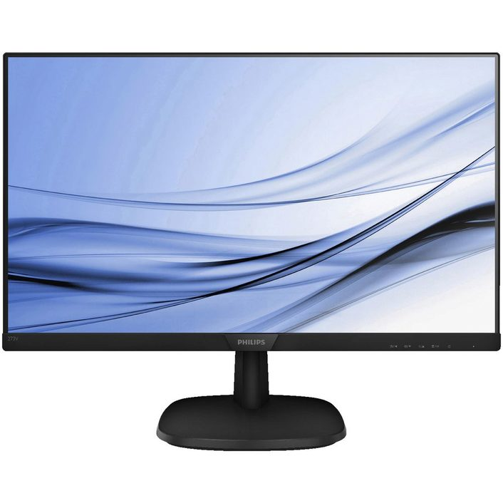
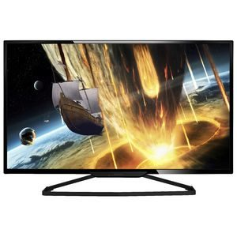
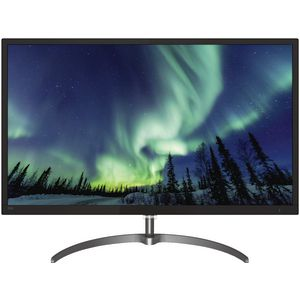

Monitors |
|
|---|---|
Phillips - Let's Make Things Better™ |
|
|  |
Discription This Philips FHD Monitor has a 27 inch display with a 16:9 image aspect ratio for crisp and detailed images. It utilises IPS LED technology with wide view for images that stretch from edge to edge and a tilt function for 178 degree viewing angles. This monitor is designed to produce true-to-life picture and is suitable for multi-displays, gaming, graphic design and professional applications. 27" display with a Full HD resolution of 1920 x 1080 Price Inc GST $248.00 Price Ex GST $225.45 |
|
Description This Philips LED Monitor has a 24 inch display with a 16:9 image aspect ratio for crisp and detailed images. It utilises IPS LED technology with wide view for images that stretch from edge to edge and SmartContrast for colour accuracy and rich black details. LowBlue mode and flicker-free technology will prevent eye strain and improve productivity. 24" display with a Full HD resolution of 1920 x 1080. Price Inc GST $178.00 Price Ex GST $161.82 |
|
|  |
Phillips 31.5" IPS-LED Monitor Description This Philips IPS-LED Monitor has a large IPS-LED display which can be viewed from a variety of different angles thanks to its wide view technology. It uses SmartContrast to deliver deep, black imagery while SmartImage preset options allow you to easily adjust your light and colour settings to suit work, photos, movies, games and other applications. 31.5" display with a Full HD resolution of 1920 x 1080. Price Inc GST $298.00 Price Ex GST $270.91 |
|  |
Description This Philips 2K Monitor has a 32 inch display with a 16:9 image aspect ratio for crisp and detailed images. It features a crystal clear QHD wide VA display and supports 1.07 billion colours for smooth colour gradations and rich detail. It has a SmartImage game mode and utilises AMD FreeSync technology which is perfect for gamers. 32" display with a QHD resolution of 2560 x 1440e Price Inc GST $448.00 Price Ex GST $407.27 |